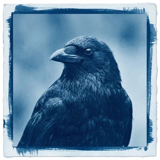
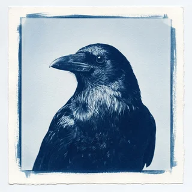
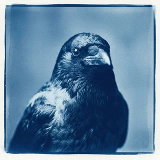

Tab, tab, twig
Predictive bend completion. Start a hook, accept the rest with a single peck. Rejecting a suggestion is also a single peck, in the same place, which accounts for most of our support volume.
Perch
Tool fabrication environment for corvids
Perch reads the first two centimetres of your stick and completes the hook. Trained on eleven million hours of birds poking things, and on the aftermath.
Assemblies
Predictive bend completion. Start a hook, accept the rest with a single peck. Rejecting a suggestion is also a single peck, in the same place, which accounts for most of our support volume.
Every tool you forge opens as a pull request to the roost. Three senior birds must approve it before you may use it on a grub. They have approved nothing since 2019 and their reasoning is not exposed via the API.
Perch indexes every human who has wronged you, scores each by severity, and pins them above your working files. It contributes nothing to tool output. It ships enabled and the toggle is greyed out.
Field reports

I forged a hook that pulled a grub out of a log in four seconds. Perch flagged it as a duplicate of a hook I forged in 2021. It was correct. We have not spoken since.

We migrated forty-one birds to the shared roost in one afternoon. Two of them came back.

The index surfaced a man from 2018 who threw a shoe at me. I did not ask for this feature. I open it every morning before I open anything else.
Parts list
| Item | Rate | Included |
|---|---|---|
| Fledgling For birds still being fed by someone else. | $0 |
|
| Murder For flocks operating at scale, or at minimum in a group. | $41 / bird / mo |
|
| Corvid Enterprise For institutions with a legal department and a tree. | $14,000 / roost / yr |
|
One file tree, one bend script, one chat panel that will not help you. No account required, because there are no accounts.
open the demo →